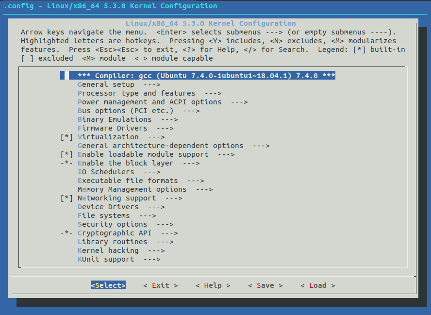
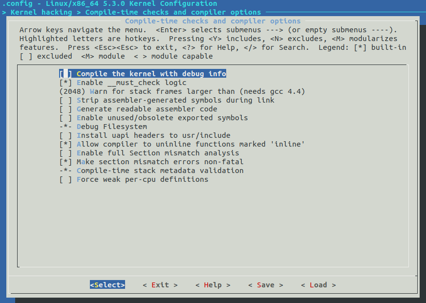
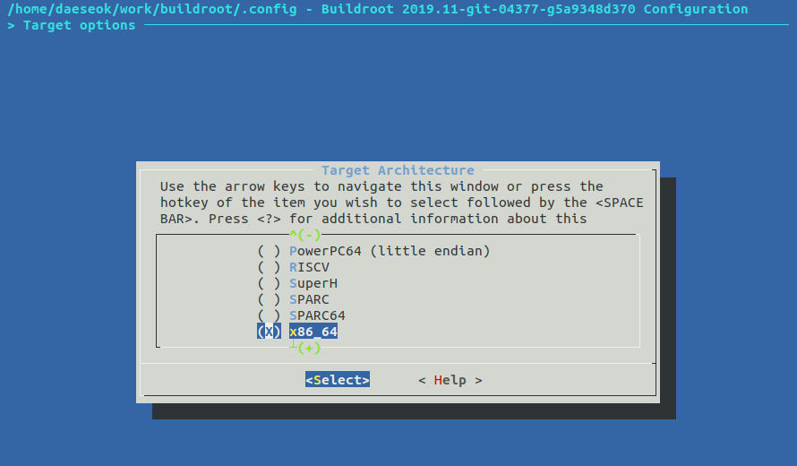
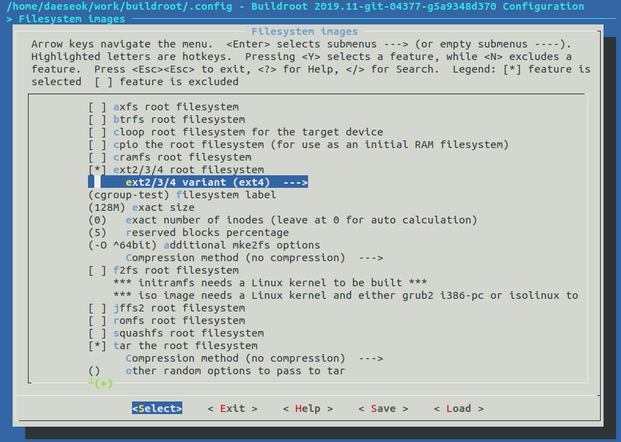

$ sudo apt install git直接阅读源代码是一件很枯燥的事情，如果可以直接进行内核调试那么阅读源代码将事半功倍，很久以前的调试工作都是直接在机器上调试，多亏了虚拟化的发展，现在可以直接在模拟环境进行调试。在这里我们将学习如何使用 Qemu 模拟器建立一个可调式的内核环境。
原文大部分来源于 medium.com/@daeseok.youn/prepare-the-environment-for-developing-linux-kernel-with-qemu-c55e37ba8ade
使用的操作系统为Ubuntu
安装依赖包
我们需要使用 git 下载代码，用 Qemu 建立模拟环境，还有内核编译所依赖的包，首先我们安装git
然后，安装qemu
$ sudo apt install qemu qemu-system安装内核编译所依赖的包
build-essential kernel-package fakeroot libncurses5-dev libssl-dev ccache flex bison libelf-dev最后，安装gdb
sudo apt install gdb下载内核源代码
在这里我们使用github上的源码
$ git clone https://hub.fastgit.org/torvalds/linux.git找到你所感兴趣的分支
$ git checkout $branch这样我们准备好。
编译内核
我通常将源代码和编译的结果放到同一个目录，您也可以自定义编译目录，内核编译需要准备一个配置文件，我通常会将运行的主机上的配置文件作为编译的配置文件，例如在ubuntu上
$ cp /boot/config-*-generic $kernel_source/然后根据自己的需要重新选择需要配置的项目，这里我们使用 make ARCH=x86_64 menuconfig 图形化的界面进行配置
$ make ARCH=x86_64 menuconfig然后会出现一个文本GUI界面，这个界面可以帮助我们进行内核的配置

通过键盘的上下左右移动光标，选中，"Kernel hacking"选项。然后通过使用”Enter“进入子菜单

然后进入”Compile-time checks and compiler options“子菜单，通过使用空格键选中”Compile the kernel with debug info“子菜单下的”Provide GDB scripts for kernel debugging“。
然后使用 Ext 键退出，根据提示保存我们的配置信息。
提供配置文件后，我们就可以编译我们自己的内核代码了
$ make -j8-j 选项指定可以并行编译的数量，这个值最好和您的CPU核心数保持一致。
...
OBJCOPY arch/x86/boot/setup.bin
BUILD arch/x86/boot/bzImage
Setup is 16124 bytes (padded to 16384 bytes).
System is 8673 kB
CRC f5ca994b
Kernel: arch/x86/boot/bzImage is ready (#5)出现这个信息表明我们的编译成功了。
建立Qemu模拟环境
得到上面的 bzImage 内核文件，就可以使用 Qemu 运行了
qemu-system-x86_64 -no-kvm -kernel arch/x86/boot/bzImage -hda /dev/zero -append "root=/dev/zero console=ttyS0" -serial stdio -display none然后屏幕中会出现系统启动的信息
qemu-system-x86_64 -no-kvm -kernel arch/x86/boot/bzImage -hda /dev/zero -append "root=/dev/zero console=ttyS0" -serial stdio -display none
[ 0.000000] Linux version 5.3.0-next-20190920 (daeseok@AD01277334) (gcc version 7.4.0 (Ubuntu 7.4.0-1ubuntu1~18.04.1)) #5 SMP Thu Sep 26 19:29:00 KST 2019
[ 0.000000] Command line: root=/dev/zero console=ttyS0
[ 0.000000] x86/fpu: x87 FPU will use FXSAVE
[ 0.000000] BIOS-provided physical RAM map:
[ 0.000000] BIOS-e820: [mem 0x0000000000000000-0x000000000009fbff] usable
[ 0.000000] BIOS-e820: [mem 0x000000000009fc00-0x000000000009ffff] reserved
[ 0.000000] BIOS-e820: [mem 0x00000000000f0000-0x00000000000fffff] reserved
[ 0.000000] BIOS-e820: [mem 0x0000000000100000-0x0000000007fdffff] usable
[ 0.000000] BIOS-e820: [mem 0x0000000007fe0000-0x0000000007ffffff] reserved
[ 0.000000] BIOS-e820: [mem 0x00000000fffc0000-0x00000000ffffffff] reserved
[ 0.000000] NX (Execute Disable) protection: active
[ 0.000000] SMBIOS 2.8 present.
[ 0.000000] DMI: QEMU Standard PC (i440FX + PIIX, 1996), BIOS 1.10.2-1ubuntu1 04/01/2014
[ 0.000000] tsc: Fast TSC calibration using PIT
[ 0.000000] tsc: Detected 3599.980 MHz processor
[ 0.004163] last_pfn = 0x7fe0 max_arch_pfn = 0x400000000
[ 0.004784] x86/PAT: Configuration [0-7]: WB WC UC- UC WB WP UC- WT
[ 0.013624] found SMP MP-table at [mem 0x000f6aa0-0x000f6aaf]
[ 0.014744] check: Scanning 1 areas for low memory corruption
[ 0.017488] ACPI: Early table checksum verification disabled
[ 0.017710] ACPI: RSDP 0x00000000000F68C0 000014 (v00 BOCHS )
[ 0.017855] ACPI: RSDT 0x0000000007FE15FC 000030 (v01 BOCHS BXPCRSDT 00000001 BXPC 00000001)
[ 0.018231] ACPI: FACP 0x0000000007FE1458 000074 (v01 BOCHS BXPCFACP 00000001 BXPC 00000001)
[ 0.018638] ACPI: DSDT 0x0000000007FE0040 001418 (v01 BOCHS BXPCDSDT 00000001 BXPC 00000001)
[ 0.018699] ACPI: FACS 0x0000000007FE0000 000040
.....但由于我们没有提供文件系统镜像，直接启动会导致系统无法直接启动，但对我们调试内核启动前的过程已经可以使用了。
使用GDB进行调试
现在我们可以使用安装的gdb进行调试了。qemu 提供了两个选项用于调试，-s 选项表明使用默认端口1234(tcp::1234)进行远程调试。-S 选项表示在没有gdb连接过来之前不启动系统。
qemu-system-x86_64 -s -S -no-kvm -kernel arch/x86/boot/bzImage -hda /dev/zero -append "root=/dev/zero console=ttyS0 nokaslr" -serial stdio -display none在这里我们需要注意个是 nokaslr 这个内核启动参数，这个参数告诉内核不要使用内核地址随机化。为了保证安全，内核会将内核代码加载到一个按照指定规则随机的地址上，让非法侵入者无法直接定位内核代码位置，这就是内核地址随机化。默认内核启动随机化是打开的，和编译的代码指定的地址不一致，会导致gdb无法定位源代码位置，所以需要加上这个选项，关闭内核地址随机化。
使用另外一个终端连接gdb
$ cd $kernel_source
$ gdb ./vmlinuz
GNU gdb (Ubuntu 8.1-0ubuntu3) 8.1.0.20180409-git
Copyright (C) 2018 Free Software Foundation, Inc.
....
(gdb)vmlinuz 文件中包含gdb所需要的信息。target remote localhost:1234 进行远程调试
(gdb) target remote localhost:1234
Remote debugging using localhost:1234
0x000000000000fff0 in entry_stack_storage ()
(gdb) break start_kernel
break start_kernel
Breakpoint 1 at 0xffffffff829abb5b: file init/main.c, line 576.这里我们设置了start_kernel断点，键入continue就可以触发系统运行
(gdb) continue
Continuing.Breakpoint 1, start_kernel () at init/main.c:576
576 {
(gdb)此时模拟的环境就挂在start_kernel断点上，此时就可以使用gdb的调试技术进行调试了。
(gdb) list
571 {
572 rest_init();
573 }
574
575 asmlinkage __visible void __init start_kernel(void)
576 {
577 char *command_line;
578 char *after_dashes;
579
580 set_task_stack_end_magic(&init_task);
(gdb)这里我们使用了list命令查看当前运行的源码。此时，我们直接执行continue继续让内核运行，由于内核中没有其他断点，qemu模拟环境由于没有找到根文件系统，此环境将异常挂起。如何让启动运行起来进行调试呢，那么，需要一个根文件系统。
下面我们就使用buildroot创建根文件系统。
使用buildroot创建根文件系统
很多系统都有自己建立根文件系统的方法，这里我们使用Buildroot。Buildroot可以帮助我们建立根文件系统，通常用于嵌入式系统，在这里我们就使用Buildroot建立根文件系统来帮助我们的调试。
首先下载代码
$ git clone git://git.buildroot.net/buildroot
$ cd buildroot第二部，和Linux内核一样，buildroot也提供了文本式的GUI配置界面
$ make menuconfig和之前配置内核一样进行配置，通过"Target Options" → "Target Architecture"选择x86_64架构

在这里文件系统我们通过路径"Filesystem images" → "ext2/3/4 root file system"选择ext兼容的文件系统。选择ext4文件系统。

然后，进行构建
$ make -j8
....
ln -sf rootfs.ext2 /home/daeseok/work/buildroot/output/images/rootfs.ext4
>>> Generating filesystem image rootfs.tar
mkdir -p /home/daeseok/work/buildroot/output/images
rm -rf /home/daeseok/work/buildroot/output/build/buildroot-fs/tar
mkdir -p /home/daeseok/work/buildroot/output/build/buildroot-fs/tar
rsync -auH --exclude=/THIS_IS_NOT_YOUR_ROOT_FILESYSTEM /home/daeseok/work/buildroot/output/target/ /home/daeseok/work/buildroot/output/build/buildroot-fs/tar/target
echo '#!/bin/sh' > /home/daeseok/work/buildroot/output/build/buildroot-fs/tar/fakeroot
echo "set -e" >> /home/daeseok/work/buildroot/output/build/buildroot-fs/tar/fakeroot
echo "chown -h -R 0:0 /home/daeseok/work/buildroot/output/build/buildroot-fs/tar/target" >> /home/daeseok/work/buildroot/output/build/buildroot-fs/tar/fakeroot
PATH="/home/daeseok/work/buildroot/output/host/bin:/home/daeseok/work/buildroot/output/host/sbin:/home/daeseok/.nvm/versions/node/v10.16.0/bin:/home/daeseok/.local/bin:/home/daeseok/bin:/usr/local/sbin:/usr/local/bin:/usr/sbin:/usr/bin:/sbin:/bin:/usr/games:/usr/local/games:/snap/bin:/home/daeseok/bin" /home/daeseok/work/buildroot/support/scripts/mkusers /home/daeseok/work/buildroot/output/build/buildroot-fs/full_users_table.txt /home/daeseok/work/buildroot/output/build/buildroot-fs/tar/target >> /home/daeseok/work/buildroot/output/build/buildroot-fs/tar/fakeroot
....执行完后，将会在buildroot/output/images/目录中得到rootfs.ext4文件，这个文件可以作为qemu中的根文件系统。
调试完整的内核
已经得到了rootfs.ext4文件，然后将其作为根文件系统运行
$ cd /path/to/linux-next
$ qemu-system-x86_64 -kernel arch/x86/boot/bzImage \
-boot c -m 2049M -hda ../buildroot/output/images/rootfs.ext4 \
-append "root=/dev/sda rw console=ttyS0,115200 acpi=off nokaslr" \
-serial stdio -display none运行好后，就可以看到登录界面了
[ 0.000000] Linux version 5.3.0-next-20190920 (daeseok@AD01277334) (gcc version 7.4.0 (Ubuntu 7.4.0-1ubuntu1~18.04.1)) #5 SMP Thu Sep 26 19:29:00 KST 2019
[ 0.000000] Command line: root=/dev/sda rw console=ttyS0,115200 acpi=off nokaslr
[ 0.000000] x86/fpu: x87 FPU will use FXSAVE
[ 0.000000] BIOS-provided physical RAM map:
....skip
[ 2.913761] EXT4-fs (sda): mounted filesystem with ordered data mode. Opts: (null)
[ 2.915210] Mounted ext4 file system at /root supports timestamps until 2038 (0x7fffffff)
[ 2.916011] VFS: Mounted root (ext4 filesystem) on device 8:0.
[ 2.921939] devtmpfs: mounted
[ 2.962863] Freeing unused kernel image memory: 1332K
[ 2.963173] Write protecting the kernel read-only data: 20480k
[ 2.965482] Freeing unused kernel image memory: 2004K
[ 2.966324] Freeing unused kernel image memory: 956K
[ 2.966546] Run /sbin/init as init process
[ 3.062589] EXT4-fs (sda): re-mounted. Opts: (null)
[ 3.062871] Mounted ext4 file system at / supports timestamps until 2038 (0x7fffffff)
Starting syslogd: OK
Starting klogd: OK
Running sysctl: [ 3.357887] find (116) used greatest stack depth: 13976 bytes left
[ 3.363719] S02sysctl (115) used greatest stack depth: 13880 bytes left
OK
Initializing random number generator... [ 3.461757] random: dd: uninitialized urandom read (512 bytes read)
done.
Starting network: [ 3.553592] ip (132) used greatest stack depth: 13800 bytes left
OKWelcome to Buildroot
buildroot login:root是默认的用户，这个用户在这个环境下默认没有密码，所以只要输入root，键入“Enter”就可以进入系统
Welcome to Buildroot
buildroot login: root
# mount
/dev/root on / type ext4 (rw,relatime)
devtmpfs on /dev type devtmpfs (rw,relatime,size=1015368k,nr_inodes=253842,mode=755)
proc on /proc type proc (rw,relatime)
devpts on /dev/pts type devpts (rw,relatime,gid=5,mode=620,ptmxmode=666)
tmpfs on /dev/shm type tmpfs (rw,relatime,mode=777)
tmpfs on /tmp type tmpfs (rw,relatime)
tmpfs on /run type tmpfs (rw,nosuid,nodev,relatime,mode=755)
sysfs on /sys type sysfs (rw,relatime)
# pwd
/root
#这样，我们就获得了一个使用我们自己编译的内核的完整模拟环境。下面，我们使用这个环境进行gdb调试吧。
首先，运行Qemu
$ qemu-system-x86_64 -s -kernel arch/x86/boot/bzImage -boot c -m 2049M -hda ../buildroot/output/images/rootfs.ext2 -append "root=/dev/sda rw console=ttyS0,115200 acpi=off nokaslr" -serial stdio -display none
...
Welcome to Buildroot
buildroot login:注意的是这里我们没有使用-S选项，说明系统会直接运行，而不会等着gdb进行连接后再运行。这里只是打开了远程调试端口。
第二步，我们使用gdb连接运行的内核环境
$ gdb ./vmlinux
...
(gdb) target remote :1234
Remote debugging using :1234
default_idle () at arch/x86/kernel/process.c:581
581 trace_cpu_idle_rcuidle(PWR_EVENT_EXIT, smp_processor_id());连接好后，就可以设置断点执行调试工作了
(gdb) b mm/page_alloc.c:4767
Breakpoint 1 at 0xffffffff811a5f60: file mm/page_alloc.c, line 4767.
(gdb) c
Continuing.例如，这里使用了源代码的位置设置断点，这个位置是get_free_pages的代码位置，所以也可以使用也可以 b get_free_pages 进行设置断点。从名字上我们知道和分配内存有关系，所以在qemu模拟环境中我们键入root登录系统，此时就会触发内存分配的过程。
Welcome to Buildroot
buildroot login: root <enter>然后，我们就会触发这个断点
Breakpoint 1, __get_free_pages (gfp_mask=4197824, order=1) at mm/page_alloc.c:4767
4767 page = alloc_pages(gfp_mask & ~__GFP_HIGHMEM, order);
(gdb)list
4762 */
4763 unsigned long __get_free_pages(gfp_t gfp_mask, unsigned int order)
4764 {
4765 struct page *page;
4766
4767 page = alloc_pages(gfp_mask & ~__GFP_HIGHMEM, order);
4768 if (!page)
4769 return 0;
4770 return (unsigned long) page_address(page);
4771 }总结
内核代码很复杂，但现在我们比开创者而言，幸福多了，我们可以根据模拟器进行内核调试，而不是一行行的进行物理环境模拟调试。通过以上的步骤，现在我们建立一个一个完整的内核模拟环境，那么，开始调试吧！